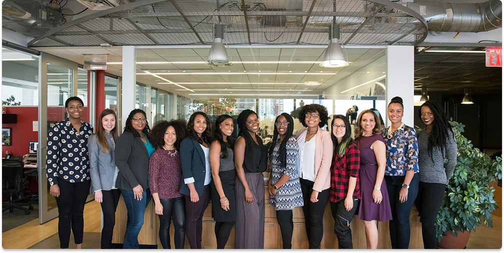

KULTURNÍ UNIE MANGY A ANIME
Organizovaná komunita fanoušků japonské pop kultury, mangy a anime.
Kdo jsme ?
Jsme organizovaná komunita fanoušků japonské pop kultury, mangy a anime. Chceme prohloubit a sdílet náš zájem o japonskou kulturu, řádně jí vysvětlit a umožnit ji ostatním pochopit. Za tímto účelem chceme vzdělávat vlastní členy a každého, kdo projeví zájem. Ať už Vás zajímají psychologické jevy v japonské společnosti, anime, light novely či základy japonské kultury, otevřeme vám "bránu" k poznání a rozšíříme obzory. Vší silou se budeme snažit poskytnout Vám dobře organizovanou a přátelskou komunitu se smyslem pro jednotu a sounáležitost.
Naše cíle
Propagace novodobého Japonska, populární a tradiční japonské kultury
Pořádání kulturních a vzdělávacích akcí (festivalů)
Osvětová činnost v oblasti japonské popové hudby
Osvětová činnost v oblasti japonské komiksové literatury
Osvětová činnost v oblasti japonských stolních a společenských her
Spolupráce s organizacemi, které mají podobné cíle
Utvoření vhodného zázemí pro své členy
Další cíle, formy a upřesnění činností stanoví orgány spolku
Navazovat kontakt a spolupráci s kulturními a společenskými organizacemi v Japonsku

Výkonná rada
President: Mikoláš Šorm
„A person grows up when he has to. When he ceases to whine and starts doing things on his own.“
Vicepresident: Nikdo
„A person grows up when he has to. When he ceases to whine and starts doing things on his own.“
Předseda: Dominika Nedvědová
„A person grows up when he has to. When he ceases to whine and starts doing things on his own.“
Místopředseda: Milan Zahradníček
„A person grows up when he has to. When he ceases to whine and starts doing things on his own.“
Sekretář: Daniel Soukup
„A person grows up when he has to. When he ceases to whine and starts doing things on his own.“
Pokladník: Nikdo
„A person grows up when he has to. When he ceases to whine and starts doing things on his own.“
Poradce: Leontin Řezníček
„A person grows up when he has to. When he ceases to whine and starts doing things on his own.“
Kde nás najdete
Sídlo
U Třetí baterie 1122/6, Praha 6
Kontakt
E-mail: cunnmaan@gmail.com